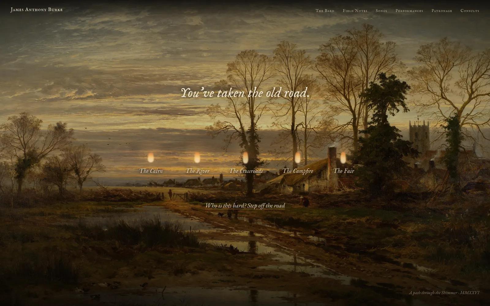
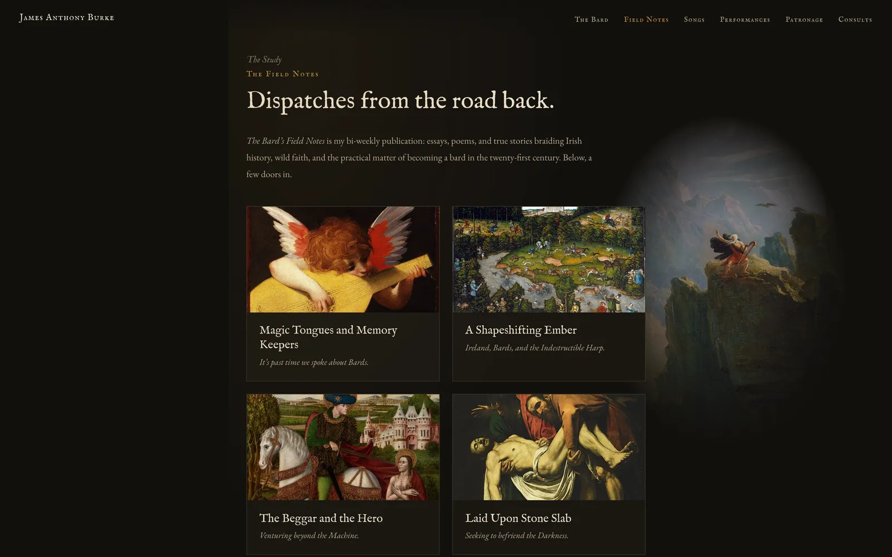

James Anthony Burke
Musician and writer
Design, copy, and build
James is a musician and writer with six albums behind him. He busked the roads of Europe with a mandola and a walking stick, and he now writes from an island in the Pacific. He calls himself a bard, and he means it precisely: in the old order a bard was musician, poet, historian, satirist, and counsel to kings.
Most musicians’ websites are press kits. If you take the word bard seriously, a press kit is the wrong container. A bard belongs on the road, so the site sends you out on one. It opens on a shut green door in a stone wall, and you scroll to venture out.

The door opens onto an old painting of a road at dusk, and five flames burn along it: the Cairn, the River, the Crossroads, the Campfire, and the Fair. Each waypoint marks a part of his working life. His field notes wait at the Cairn, his songs at the River, his performance reels at the Crossroads, and his consults at the Fair. The painting stays dim so the flames carry the light.

Step off the road and you meet the man: a line drawing of James rendered in candle glow, and his poem Beloved, read aloud in his own voice. The copy across the site is written in his register, from the waypoint names to the sign-off at the bottom of the page.
All of it came from one conversation and a close read of his writing. He had already told everyone what he was. The site takes him at his word.
